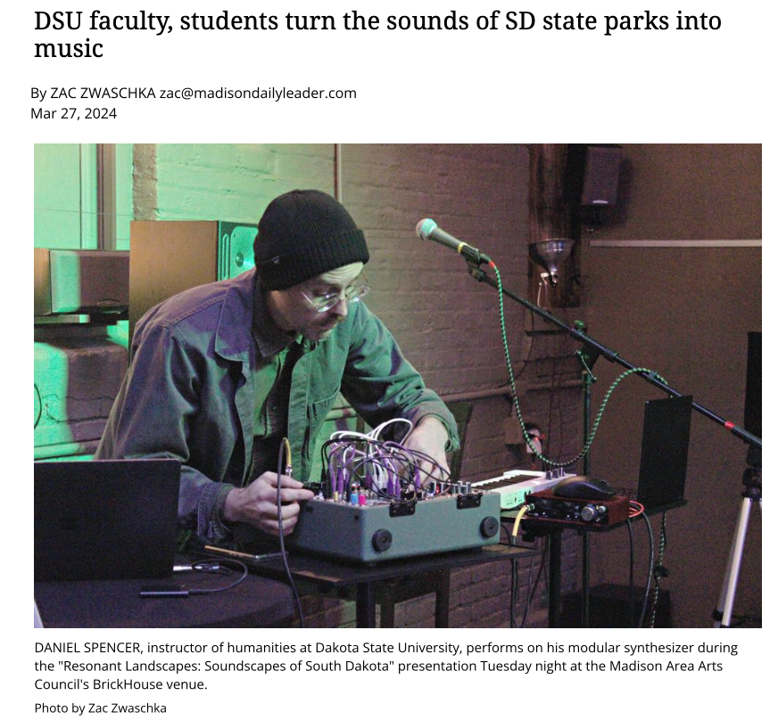
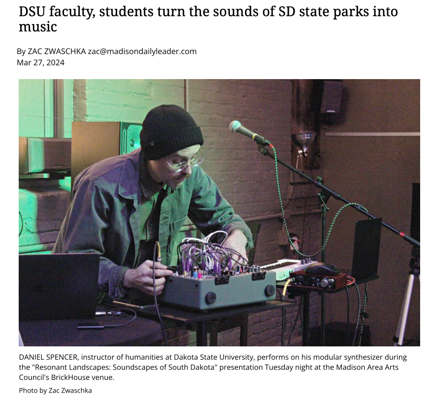

Carson, Tate. “A More Perfect Union: Composition with Audience-Controlled Smartphone
Speaker Array and Evolutionary Computer Music.” In Proceedings of the Web Audio Conference. Berlin,
Germany, 2018.
———. “Immaterial.Cloud: Using Peer-to-Peer Technologies for Music.” In Proceedings of
the Web Audio Conference. Barcelona, Spain, 2021.
———. “Mesh Garden: A Creative-Based Musical Game for Participatory Musical Performance.” In
Proceedings of the International Conference on New Interfaces for Musical Expression, 339–42. Porto
Alegre, Brazil, 2019.
———. “Musical Sonification of Hurricane Katrina and Its Aftermath.” Master, Mills College,
2017.
———. “On Ecocomposition: An Interview with Damián Keller.” Journal of Digital Media
& Interaction 3, no. 5 (2020): 133–42.
———. “Philosophical Underpinnings of Environmental Music.” In Proceedings of the
International Computer Music Conference. Daegu, Korea, 2018.
———. “Sounds Aware: A Mobile App for Raising Awareness of Environmental Sound.” In
Proceedings of the Web Audio Conference. Trondheim, Norway, 2019.
———. “Systems Thinking and Environmental Interaction in the Work of Tomás Saraceno and
David Dunn.” In Proceedings of the International Computer Music Conference. New York, 2019.
———. “Teaching Video Game Sound: Balancing Technical Know-How with Sonic Creativity.” Talk
presented at the 2023 ATMI/CMS National Conference, Miami, Florida, 2023.
https://www.atmimusic.com/conferences/2023-atmi-cms-national-convention/.
———. “Using Distributed Technology to Make Music in the Time of the Attention Economy.”
Phd, Louisiana State University and Agricultural & Mechanical College, 2021.
Carson, Tate, and Carter Gordon. “Resonant Landscapes.” In
Audio Mostly 2024 -
Explorations in Sonic Cultures, 525–32. Milan Italy: ACM, 2024.
https://doi.org/10.1145/3678299.3678354.
Marasco, Anthony T, Tate Carson, and Matthew A Bardin. “Designing Collaborative and
Mediated Experiences with Networked Circuit-Bent Devices.” In Proceedings of the Sound, Image and Interaction
Design Symposium, 2020.


 
